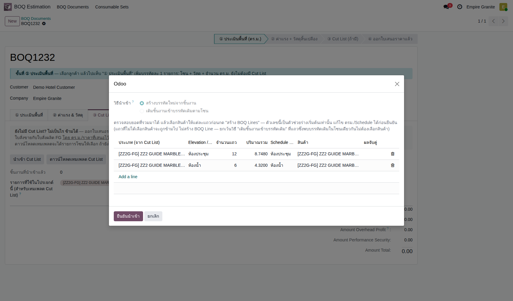
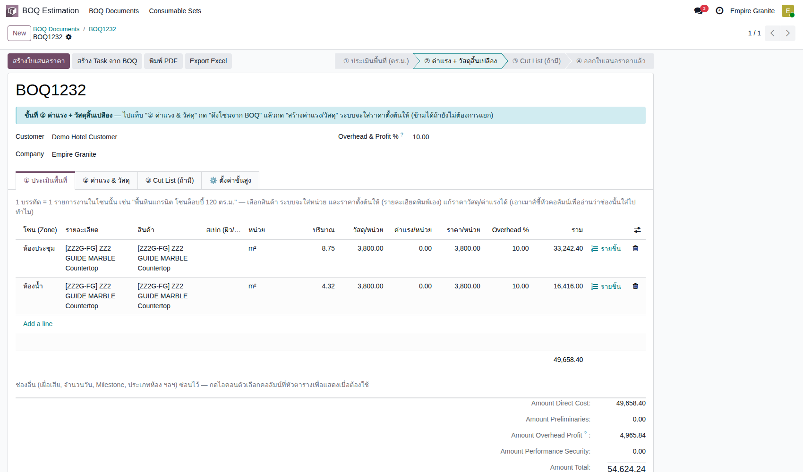
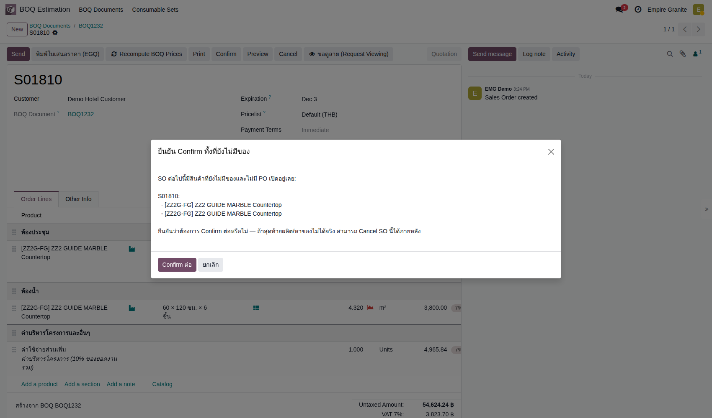
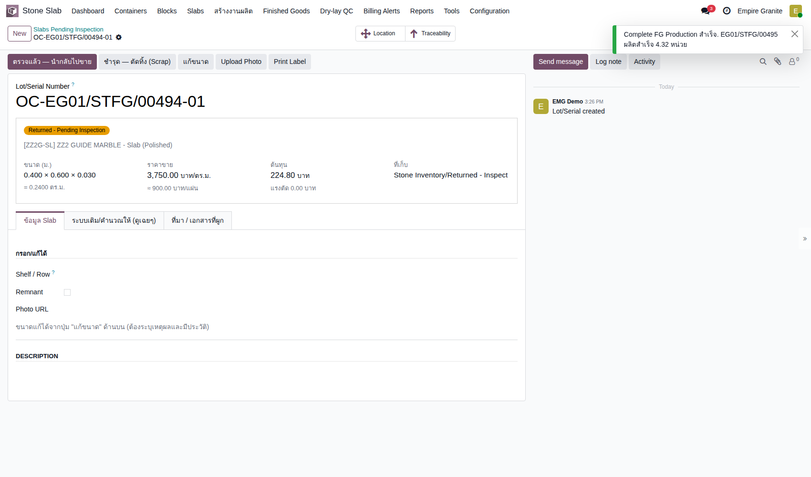
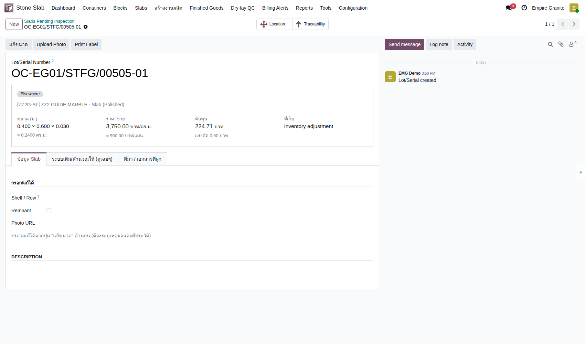
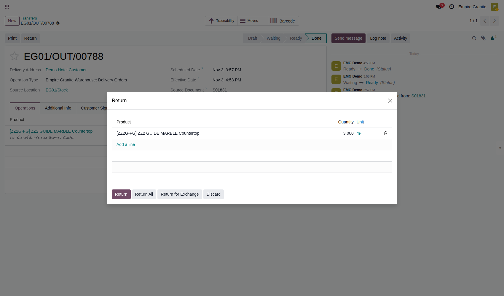
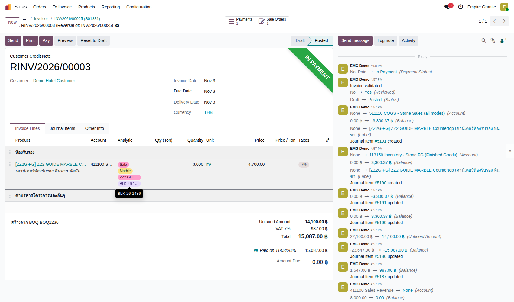
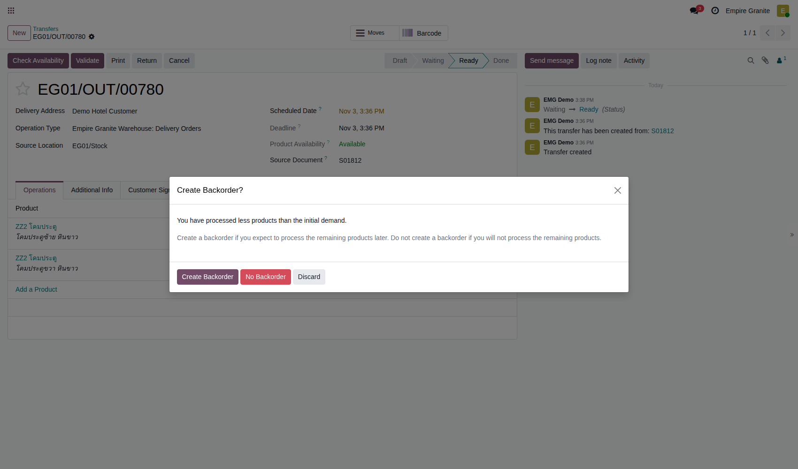
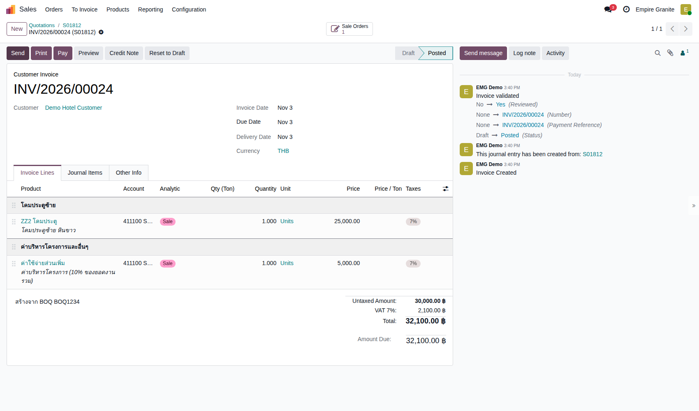
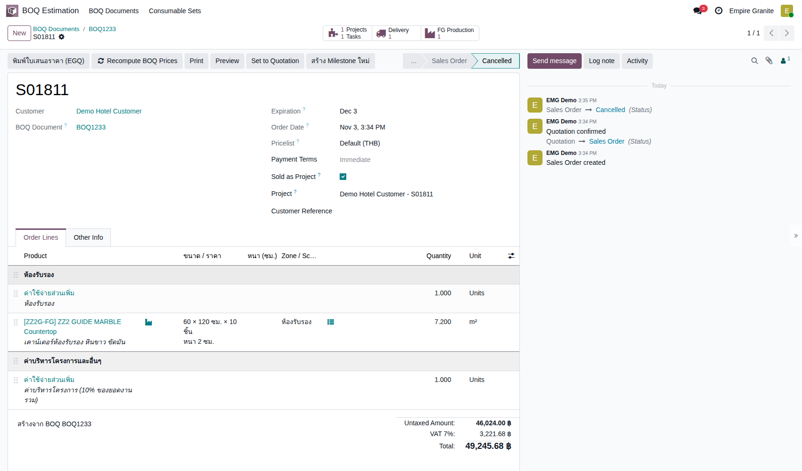

Empire Stone × Empire Granite — QA
ชุดทดสอบ BOQ — กรณีพิเศษ ชุดที่ 2
อัปเดตล่าสุด: 3 พฤศจิกายน 2569 (2026-11-03) · รันจริงบน eg-tst ผ่านหน้าจอ ใช้ผู้ใช้ emgdemo บริษัท Empire Granite
เคสที่ ชุดกรณีพิเศษชุดแรก ระบุว่ายังไม่ครอบคลุม: Cut List ก่อนออกใบเสนอราคา · นำเข้าซ้ำ · ตัดเศษทิ้ง · คืนของบางส่วน · คืนหลังจ่ายเงิน · ส่งโคมทีละใบ · ยกเลิกใบขาย Project
ประเด็นที่ต้องการการยืนยัน (ผู้จัดทำตัดสินใจแทนไปก่อนหรือยังไม่แก้ โปรดยืนยันหรือแจ้งให้ปรับ) · เรื่อง Project/Task หลังยกเลิกใบขาย ตัดสินใจแล้วว่าปล่อยไว้ ผู้ใช้จัดการเอง (TC-EX2-10)
- บัญชีสำหรับตัดเศษทิ้ง — เดิมตัดทิ้งแล้วไม่มีรายการบัญชี เพราะที่เก็บ Scrap/Inventory adjustment ไม่ได้ตั้งบัญชี ผู้จัดทำตั้ง Inventory Write-down (511300) ให้บน eg-tst แล้วและตรวจซ้ำ (TC-EX2-05) ขอให้ฝ่ายบัญชียืนยันบัญชีก่อนใช้จริง และตั้งค่าเดียวกันบนระบบจริง
- คืนของบางจำนวนของ lot ได้ แต่ส่งแบ่ง lot ไม่ได้ — ขอยืนยันว่าต้องการให้คืนแบ่งได้ (TC-EX2-06)
- บัญชี Outstanding Receipts/Payments ของ Bank — ที่ Manual Payment ของ Bank (EG และ ES) ยังว่าง ทำให้รับชำระแล้วไม่ลงบัญชี ผู้จัดทำตั้ง 111204 Outstanding Receipts และ 111205 Outstanding Payments ให้บน eg-tst แล้ว (ตรวจซ้ำใน TC-EX2-07) ขอให้บัญชียืนยัน และตั้งค่าเดียวกันบนระบบจริง · การคืนเงินลูกค้าต้องกด Pay บน Credit Note เอง ระบบไม่คืนให้ ขอยืนยันว่าตรงกับวิธีทำงานจริง
- ค่าบริหารโครงการเรียกเก็บเต็มในใบแรกของการส่งบางส่วน — เหมือนชุดแรก (TC-EX2-09)
10Test Case ทั้งหมด
5หมวด
8High Priority
2Medium Priority
0Low Priority
ชุดนี้ใช้คู่กับชุดกรณีพิเศษชุดแรกและ Golden Path เส้นทาง 1–5
- ชุดแรก: ไฟล์ผิด · Cut List ผิด · เศษหิน · ส่ง/วางบิลบางส่วน · คืนของ · เส้นทางหลัก 1 · 2 · 3 · 4 · 5
- ต้องผ่าน Setup ระบบ มาก่อน มี Slab ZZ2 GUIDE MARBLE ที่ Available อย่างน้อย 10 แผ่น และสินค้า ZZ2 โคมประตู (จากเส้นทาง 5) สำหรับเคสโคม
- ขอบเขต 10 เคส: Cut List ก่อนออกใบเสนอราคาและซ้ำ 3 · เศษที่ชำรุด 2 · คืนบางส่วนและหลังจ่ายเงิน 2 · ส่งโคมทีละใบ 2 · ยกเลิกใบขาย Project 1
A. Cut List ก่อนออกใบเสนอราคา และนำเข้าซ้ำ
BOQ ที่ยังไม่มีบรรทัดสร้างบรรทัดจาก Cut List ได้ · นำเข้าซ้ำไม่ทำให้ชิ้นงานซ้อน · ยืนยันขายโดยยังไม่มีของ · 3 test cases
| TC ID | Scenario | Precondition | Steps | ข้อมูลตัวอย่าง | Expected Result | Priority | ภาพหน้าจอ |
|---|---|---|---|---|---|---|---|
| TC-EX2-01 | นำเข้า Cut List ก่อนออกใบเสนอราคา (สร้างบรรทัดใหม่จากชิ้นงาน) ตัวเลือก สร้างบรรทัดใหม่จากชิ้นงาน ใช้ได้เมื่อ BOQ ยังไม่ออกใบเสนอราคา ระบบรวมยอดตามโซนและจับคู่สินค้าให้ตามสินค้าที่เลือกไว้ที่แท็บ ③ · เส้นทาง 2 และ 5 ใช้แบบหลังขาย (เติมเข้าบรรทัดเดิม) |
BOQ ใหม่ที่เลือกลูกค้า Demo Hotel Customer แล้วบันทึก ยังไม่มีบรรทัด · เลือกสินค้า ZZ2G-FG ที่แท็บ ③ Cut List · ไฟล์ cutlist-import-zz2-meeting.xlsx (18 ชิ้น 2 โซน) |
|
โซน ห้องประชุม 12 ชิ้น 8.7480 ตร.ม. · โซน ห้องน้ำ 6 ชิ้น 4.3200 ตร.ม. | ตารางตรวจทานเลือกวิธี สร้างบรรทัดใหม่จากชิ้นงาน และจับคู่สินค้า [ZZ2G-FG] ให้ทั้งสองโซน · หลังยืนยัน แท็บ ① มี 2 บรรทัด: ห้องประชุม 8.75 ตร.ม. × 3,800.00 = 33,242.40 · ห้องน้ำ 4.32 × 3,800.00 = 16,416.00 · Direct Cost 49,658.40 · Overhead 4,965.84 · Amount Total 54,624.24 | High |  |
| TC-EX2-02 | นำเข้า Cut List ไฟล์เดิมซ้ำอีกครั้ง ครั้งที่สองระบบเลือกวิธี เติมชิ้นงานเข้าบรรทัดเดิมตามโซน ให้เอง จึงไม่สร้างบรรทัดซ้ำและไม่เพิ่มชิ้นงานซ้อน · ผลตรวจในฐานข้อมูล: ห้องประชุม 12 ชิ้น ห้องน้ำ 6 ชิ้น เท่าเดิม |
ทำ TC-EX2-01 เสร็จแล้ว |
|
ไฟล์เดียวกับเคสก่อน | ข้อความ เติมชิ้นงานเข้าบรรทัดเดิมแล้ว. ห้องประชุม: ประเมิน 8.75 / Cut List 8.75 ตร.ม. (ตรงกัน) | ห้องน้ำ: ประเมิน 4.32 / Cut List 4.32 ตร.ม. (ตรงกัน) · แท็บ ① ยังมี 2 บรรทัดเท่าเดิม · Amount Total 54,624.24 ไม่เปลี่ยน · ชิ้นงานต่อบรรทัด 12 และ 6 ไม่ซ้อน | High |  |
| TC-EX2-03 | ยืนยันขายทั้งที่ FG ยังไม่มีของและไม่มี PO หน้าต่างเตือนนี้ไม่บล็อก กด Confirm ต่อ ได้ (FG ผลิตตามออเดอร์จึงไม่มีสต็อกตอนขายเป็นปกติ) · ผู้จัดทำยังไม่ทราบเงื่อนไขที่ทำให้ขึ้นเฉพาะบางใบ (ใบอื่นที่ทำวันเดียวกันไม่ขึ้นหน้าต่างนี้) |
BOQ จาก TC-EX2-01 ออกใบเสนอราคาแล้ว (S01810 รวม 58,447.94 รวม VAT) |
|
- | หน้าต่าง ยืนยัน Confirm ทั้งที่ยังไม่มีของ รายชื่อสินค้า 2 บรรทัด ข้อความ ถ้าสุดท้ายผลิต/หาของไม่ได้จริง สามารถ Cancel SO นี้ได้ภายหลัง · หลังกด Confirm ต่อ ใบสั่งขายเป็น Sales Order มีปุ่ม Delivery 1 และ FG Production 2 (ใบสั่งผลิต EG01/STFG/00494 และ 00495) | Medium |  |
B. เศษหินที่ตรวจแล้วชำรุด
บันทึกเศษเล็กที่ใช้ไม่ได้ แล้วตัดทิ้งที่ Slabs Pending Inspection · 2 test cases
| TC ID | Scenario | Precondition | Steps | ข้อมูลตัวอย่าง | Expected Result | Priority | ภาพหน้าจอ |
|---|---|---|---|---|---|---|---|
| TC-EX2-04 | ผลิต FG เสร็จพร้อมเศษเล็กที่แตกร้าว วิธีบันทึกเศษเหมือน TC-EX-06 ขนาดเป็นเมตร · เศษเข้า Returned - Inspect รอตรวจ ต้นทุนคิดตามพื้นที่ |
ใบสั่งผลิต EG01/STFG/00494 (ห้องประชุม 8.75 ตร.ม.) ย้ายไปสถานีตัดและ Confirm แล้ว |
|
เศษ 0.40 × 0.60 ม. = 0.24 ตร.ม. | ใบสั่งผลิต Done · เศษได้ Offcut Lot OC-EG01/STFG/00494-01 ต้นทุน 224.80 · ฟอร์ม Lot: สถานะ Returned - Pending Inspection ที่เก็บ Stone Inventory/Returned - Inspect ขนาด 0.400 × 0.600 × 0.030 · มีปุ่ม ตรวจแล้ว — นำกลับไปขาย และ ชำรุด — ตัดทิ้ง (Scrap) | Medium |  |
| TC-EX2-05 | กด ชำรุด — ตัดทิ้ง (Scrap) ที่เศษ แล้วตรวจรายการบัญชี การตัดทิ้งลงบัญชีได้ก็ต่อเมื่อที่เก็บ Scrap และ Inventory adjustment ตั้ง Stock Valuation Account ไว้ · รอบแรก (ใบ S01810 เศษ 224.80) ยังไม่ได้ตั้ง จึงไม่มีรายการบัญชีเลย ต้นทุนเศษค้างอยู่ในบัญชีสต็อก · ตั้งบัญชี Inventory Write-down (511300) ที่ 4 ที่เก็บของ Empire Granite และ Empire Stone บน eg-tst แล้ว เคสนี้รันซ้ำหลังตั้ง · บัญชีที่เลือกเป็นข้อสมมติ รอฝ่ายบัญชียืนยัน |
ทำซ้ำ TC-EX2-04 บนใบเสนอราคา S01831 (BOQ1236 จาก boq-import-zz2-reception.xlsx) ใบสั่งผลิต EG01/STFG/00505 ได้เศษ OC-EG01/STFG/00505-01 ต้นทุน 224.71 · ที่เก็บ Scrap และ Inventory adjustment ของบริษัทตั้ง Stock Valuation Account = Inventory Write-down (511300) |
|
- | หน้าต่าง Confirmation: ตัดทิ้งแผ่นนี้ออกจากสต็อก? · หลังกด Ok: ที่เก็บ Inventory adjustment สถานะ Elsewhere ไม่มีปุ่มตรวจแล้วนำกลับไปขาย · ได้ใบสำคัญ STJ/2026/11/0092 อ้างอิง SP/00026 ยอด 224.71: เดบิต Inventory Write-down 224.71 เครดิต Inventory - Stone Slabs (Ready-Made) 224.71 · ถ้ายังไม่ตั้งบัญชีที่ที่เก็บ จะไม่มีใบสำคัญนี้ | High |  |
C. คืนของบางส่วนและคืนหลังจ่ายเงินแล้ว
คืนเฉพาะบางชิ้นหรือบางจำนวน · Credit Note บางส่วนของใบแจ้งหนี้ที่ชำระแล้ว · 2 test cases
| TC ID | Scenario | Precondition | Steps | ข้อมูลตัวอย่าง | Expected Result | Priority | ภาพหน้าจอ |
|---|---|---|---|---|---|---|---|
| TC-EX2-06 | คืน FG บางจำนวนของใบส่งของ ต่างจากการส่ง (ที่ lot เดียวต้องส่งทั้งชิ้น) การรับคืนระบบยอมให้คืนบางจำนวนของ lot ได้ · ส่ง 7.200 แล้วคืน 3.000 อีก 4.200 ยังอยู่กับลูกค้า |
ใบสั่งขาย S01831 (เคาน์เตอร์ห้องรับรอง 7.200 ตร.ม. 4,700 ต่อ ตร.ม.) ผลิตแล้ว ส่งของ EG01/OUT/00788 ครบ 7.200 ออกใบแจ้งหนี้ INV/2026/00025 (46,024.00 ก่อน VAT รวม 49,245.68) และรับชำระครบแล้วโดย PBNK1/2026/00001 (ดู TC-EX2-07) |
|
คืน 3.000 จาก 7.200 ตร.ม. | ได้ใบรับคืน EG01/IN/00750 บรรทัดเดียว 3.000 ปลายทาง EG01/Stock · Validate ผ่านเป็น Done ไม่มีข้อความห้ามแบ่ง | High |  |
| TC-EX2-07 | ชำระเงิน ออก Credit Note เฉพาะส่วนที่คืน และคืนเงินลูกค้า ระบบไม่คืนเงินให้เอง ต้องกด Pay บน Credit Note · Credit Note ใช้ยอดเต็มของแต่ละบรรทัดที่ยกมา ต้องลบบรรทัดที่ไม่ได้คืน (ค่าใช้จ่ายส่วนเพิ่มของห้อง และค่าบริหารโครงการ) ออกเอง · ต้องตั้งบัญชี Outstanding Receipts/Payments ที่ Manual Payment ของ Bank ก่อน (ดูคู่มือ Setup) ไม่เช่นนั้นการชำระจะไม่ลงบัญชี ใบแจ้งหนี้ไม่ถูกตัดยอด และสถานะ In Payment หลอกว่าจ่ายแล้ว (รอบแรกของเคสนี้เจอเรื่องนี้ ยอดค้าง 28,617.52 ที่เคยรายงานไว้คือผลจากสาเหตุนี้ ไม่ใช่ความผิดปกติของ Credit Note) |
ใบแจ้งหนี้ INV/2026/00025 Posted · Bank ของบริษัทตั้ง Outstanding Receipts และ Outstanding Payments แล้ว |
|
เคาน์เตอร์ 3.000 × 4,700.00 = 14,100.00 · VAT 7% = 987.00 · รวม 15,087.00 | RINV/2026/00003 Posted ก่อน VAT 14,100.00 · VAT 987.00 · รวม 15,087.00 ยอดค้าง 15,087.00 (ยังไม่ Paid จนกว่าจะคืนเงิน) · ตอน Confirm ระบบลงกลับต้นทุนขาย 3,300.37 (เดบิต Inventory - Stone FG เครดิต COGS) · หลังกด Pay ได้ PBNK1/2026/00002 (ขาออก 15,087.00) แสดง In Payment ยอดค้าง 0 · ใบแจ้งหนี้เดิมยังยอดค้าง 0 | High |  |
D. ส่งโคม (Custom FG ซีเรียล) ทีละใบ
โคมแต่ละใบมีซีเรียลของตัวเอง ส่งแยกได้ต่างจากพื้นที่เป็น lot เดียว · 2 test cases
| TC ID | Scenario | Precondition | Steps | ข้อมูลตัวอย่าง | Expected Result | Priority | ภาพหน้าจอ |
|---|---|---|---|---|---|---|---|
| TC-EX2-08 | ส่งโคมใบแรก แล้วสร้างใบค้างส่งสำหรับใบที่สอง ใบสั่งขายมีโคมซ้ายและโคมขวาเป็นคนละบรรทัด ตั้ง Quantity ของบรรทัดที่ยังไม่ส่งเป็น 0 · ใบสั่งผลิตของโคมเกิดหลังนำเข้า Cut List (เหมือนเส้นทาง 5) |
BOQ1234 (โคมประตูซ้ายและขวา ใบละ 25,000) ยืนยันขายก่อนมี Cut List แล้วนำเข้า cutlist-import-zz2-lamps.xlsx · ผลิตโคมทั้งสองใบเสร็จ (EG01/STFG/00497 และ 00498 ผ่านใบตัดและใบประกอบ) · ใบส่งของ EG01/OUT/00780 มี 2 บรรทัด Ready |
|
บรรทัด 1 ส่ง 1.000 · บรรทัด 2 ส่ง 0 (จาก 1.000) | หน้าต่าง Create Backorder? ขึ้น · หลังกด ใบ EG01/OUT/00780 Done 1.000 หน่วย (โคมใบแรก) · เกิด EG01/OUT/00781 Ready อีก 1 หน่วย อ้างอิง Back Order of EG01/OUT/00780 | High |  |
| TC-EX2-09 | ออกใบแจ้งหนี้ตามที่ส่ง (โคมใบเดียว) ค่าบริหารโครงการ 5,000 ถูกเรียกเก็บเต็มจำนวนในใบแรก (เหมือน TC-EX-12) ไม่แบ่งตามสัดส่วน · ใบที่สองจะมีแต่โคมใบที่สอง 25,000 |
ทำ TC-EX2-08 เสร็จแล้ว |
|
- | INV/2026/00024 Posted: โคมประตูซ้าย 1.000 × 25,000.00 · ค่าบริหารโครงการ 5,000.00 · ก่อน VAT 30,000.00 · VAT 2,100.00 · รวม 32,100.00 · ไม่มีบรรทัดโคมขวา | High |  |
E. ยกเลิกใบสั่งขายที่ยืนยันเป็น Project แล้ว
Cancel ที่ใบสั่งขายหลังยืนยัน · สิ่งที่ถูกยกเลิกและสิ่งที่ค้าง · 1 test case
| TC ID | Scenario | Precondition | Steps | ข้อมูลตัวอย่าง | Expected Result | Priority | ภาพหน้าจอ |
|---|---|---|---|---|---|---|---|
| TC-EX2-10 | กด Cancel ที่ใบสั่งขายที่ติ๊ก Sold as Project และยืนยันแล้ว (ยังไม่ผลิต ไม่ส่ง) ใบสั่งขายและใบส่งของถูกยกเลิก และใบสั่งผลิตที่ยังเป็น Draft ถูกยกเลิกตามไปด้วย (แก้แล้ว stone_slab_inventory 19.0.2.109.68 เดิมใบสั่งผลิตค้างและจอง Slab ไว้ 2 แผ่น) · ใบสั่งผลิตที่ Confirm หรือเริ่มผลิตแล้วไม่ถูกยกเลิกให้ · Project และ Task ยังค้างใช้งาน ตัดสินใจแล้ว (3 พ.ย. 2569) ว่าปล่อยไว้ให้ผู้ใช้ปิดหรือเก็บเอง ระบบไม่ปิดให้ |
ใบเสนอราคา S01830 จาก BOQ1235 (7.2 ตร.ม. ไฟล์ boq-import-zz2-reception.xlsx) ติ๊ก Sold as Project แล้ว Confirm · มี Project 1 Task 1 ใบส่งของ 1 ใบสั่งผลิต 1 (Draft) |
|
- | สถานะ Cancelled · ใบส่งของ EG01/OUT/00787 Cancelled · ใบสั่งผลิต EG01/STFG/00504 Cancelled (ปุ่ม FG Production หายจากใบสั่งขาย) · ปุ่มสมาร์ทยังแสดง Projects 1 · Tasks 1 · Project และ Task (In Progress) ยังใช้งานอยู่ | High |  |